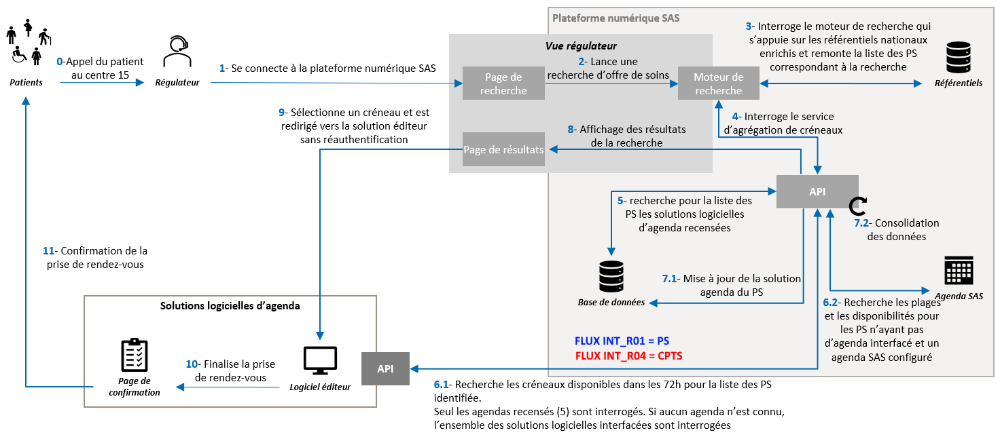
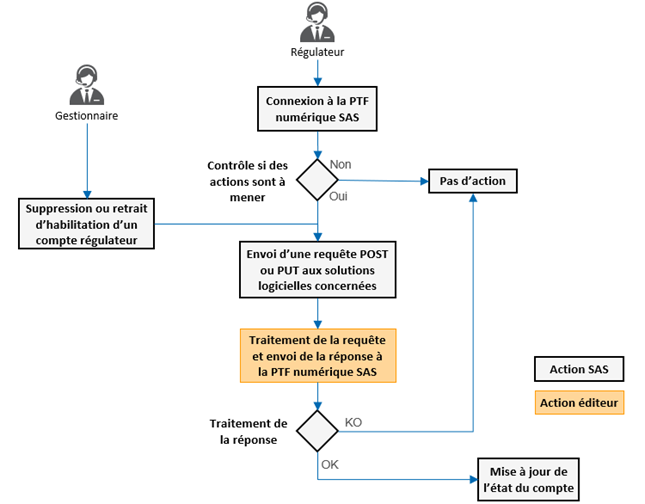
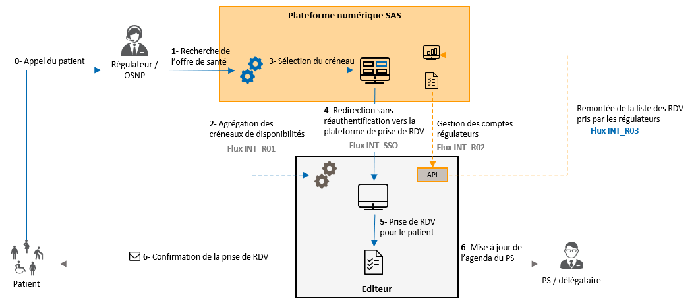

Service d'Accès aux Soins
1.1.0 - ci-build

Service d'Accès aux Soins
1.1.0 - ci-build

Service d'Accès aux Soins - Local Development build (v1.1.0) built by the FHIR (HL7® FHIR® Standard) Build Tools. See the Directory of published versions
A ce jour, les API ont pour vocation de répondre aux cas d'usage suivants :
Les rendez-vous ainsi centralisés dans la plateforme sont également transmis aux logiciels de régultation médicale (LRM)
Pour les cas d'usage couverts par ces API :
L'objectif de cette interface est de permettre l'agrégation des créneaux de disponibilités des solutions logicielles d'agenda avec prise de RDV dans la plateforme numérique SAS :
Le schéma de présentation générale ci-dessous illustre ce cas d'usage :
|

|
| Présentation recherche de créneaux PS indiv. - CPTS |
Les créneaux de disponibilités sont renseignés par les professionnels effecteurs de soins ou délégataires dans leur solution logicielle d'agenda. Le flux décrit ci-dessous permet de récupérer et d'afficher dans la plateforme numérique SAS les créneaux selon les modalités définies lors des Groupes de Travail en bilatérales avec l'ANS. Lors d'une recherche d'offre de soins sur la plateforme numérique SAS, le moteur de recherche va s'appuyer sur les référentiels nationaux pour identifier l'offre correspondant aux critères de recherche. Une liste de 1 à 25 RPPS/ADELI est envoyée aux solutions logicielles éditeurs pour identifier les créneaux de disponibilités des professionnels de santé (PS) correspondants. Les types de créneaux remontés dans la plateforme sont :
L’objectif de cette interface est de permettre l’agrégation des créneaux de disponibilités dans la plateforme numérique SAS des professionnels de santé exerçants au sein d’une association SOS Médecins. Ces créneaux sont renseignés dans un logiciel de gestion d’agenda avec prise de rendez-vous.
Le schéma de présentation générale ci-dessous illustre ce cas d’usage :

|
| Présentation recherche de créneaux SOS Médecins |
Les créneaux de disponibilités des Points Fixes de Garde (PFG), lieux de consultation SOS Médecins, sont renseignés par les associations dans les solutions logicielles d’agendas. Le flux décrit ci-dessous permet de récupérer et d’afficher dans la plateforme numérique SAS les créneaux selon les modalités définies lors des Groupes de Travail en bilatérales avec l’ANS. Lors d’une recherche d’offre de soins sur la plateforme numérique SAS, le moteur de recherche va s’appuyer sur les référentiels nationaux enrichis pour identifier l’offre de soins correspondant aux critères de recherche. Une liste de 1 à 10 SIRET, identifiant national de structure (IDNST) d’une association SOS Médecins, est envoyée aux solutions logicielles éditeurs pour identifier les créneaux de disponibilités des Points Fixes de Garde (PFG) correspondants. Les types de créneaux remontés dans la plateforme sont :
L'agrégateur de créneaux fait intervenir de nombreux acteurs, pour la plupart externes au SAS. Il est donc nécessaire de s'assurer d'une technologie commune aux différentes plateformes. Les échanges reposent sur des webservices se basant sur l'API REST du standard HL7 FHIR (R4).
Le schéma ci-dessous illustre les échanges à mettre en oeuvre entre la plateforme numérique SAS, et les différentes solutions interfacées :
La structure de réponse attendue inclut l’ensemble des créneaux de disponibilités correspondant à la requête réalisée par la plateforme numérique SAS. 1 à n créneaux de consultation (Slot) peuvent être rattachés à 1 agenda (Schedule) qui représente 1 lieu de consultation (PractitionerRole), lui-même rattaché à 1 PS (Practitioner). Si des créneaux de consultation sont proposés pour plusieurs lieux de consultation, on aura autant d’agendas (Schedule) que de lieux de consultation (PractitionerRole).
Dans le cas où un créneau CPTS est transmis, la transmission de l’information sur le type de créneau « CPTS » est attendu ainsi que les données de la structure CPTS associée. Au niveau de la structure de réponse, 1 à n créneaux de consultation CPTS (Slot) peuvent être rattachés à 1 ou n prestations de soins (FrHealthcareService) qui sont chacun rattachées à 1 structure CPTS (FrOrganization). Pour le reste de la structure de réponse, celle -ci reste identique à ce qui a été présenté précédemment.
Le schéma ci-dessous présente une synthèse de la structure attendue :
La structure de réponse attendue inclut l’ensemble des créneaux de consultation disponibles correspondant à la requête réalisée par la plateforme numérique SAS. 1 à n créneaux de consultation (Slot) peuvent être rattachés à 1 agenda (Schedule) qui représente 1 point fixe de garde (Location), lui-même rattaché à 1 association SOS Médecins (Organization). Si des créneaux de consultation sont proposés pour plusieurs PFG, on aura autant d’agendas (Schedule) que de PFG (Location).
Le schéma ci-dessous présente une synthèse de la structure attendue :
L’objectif de cette interface, flux INT_R02, est de permettre la gestion automatisée des comptes régulateurs SAS qui auront besoin d’accéder aux solutions logicielles de prise de RDV dans le cadre de leurs fonctions. Cela prend en compte la création, la modification ou la suppression des comptes identifiés.
Pour la mise en place de ce flux, il est nécessaire de s’assurer d’une technologie commune aux différentes plateformes. Les échanges reposent sur des webservices se basant sur l’API REST du standard HL7 FHIR, et respectant les spécifications des flux 1a et 1b du volet d’agendas partagés du Cadre d’Interopérabilité des Systèmes d’Information de Santé (CI-SIS).
Lorsqu'un compte régulateur est créé dans la plateforme SAS, celle-ci transmet une requête de création de compte dans la solution logicielle éditeur.
Le schéma ci-dessous illustre l'échange à mettre en oeuvre :
La modification de compte peut porter sur chacun des éléments de la ressource transmise (nom, prénom, mail, ID national,habilitation).
Le schéma ci-dessous illustre l'échange à mettre en oeuvre :
Afin de limiter le nombre d’appels émis vers les solutions logicielles éditeurs, et éviter d’avoir à gérer des créations ou mises à jour massives de comptes (batch d’initialisation, reprise, etc.), les mécaniques suivantes ont été mises en œuvre pour le déclenchement des requêtes :
|

|
Autres règles de gestion fonctionnelles à prendre en compte par les éditeurs :
L'objectif de cette interface, flux INT_R03, est de permettre la transmission des données liées à l'usage de la fonctionnalité de prise de RDV par les régulateurs provenant de la plateforme numérique SAS, dans les solutions logicielles d'agenda. Le schéma de présentation générale ci-dessous illustre le cas d'usage :
|

|
| Présentation gestion de rendez-vous |
Après avoir sélectionné un créneau depuis la plateforme numérique SAS et avoir été redirigé vers la plateforme de prise de RDV éditeur, le régulateur prend directement RDV pour le patient dans la solution éditeur. Dès que le RDV est pris, les informations associées sont transmises à la plateforme numérique SAS via le flux INT_R03 mis en place. Lors de chaque mise à jour du RDV (annulation, modification, honoré, non honoré), l'information est transmise par le biais de ce flux à la plateforme numérique SAS. Ces données sont utilisées pour suivre l'activité réelle engendrée par le SAS, permettre l'analyse du dispositif de l'avenant 9 par la CNAM et assurer la traçabilité des RDV patients pour le suivi dans le LRM à terme. Pour la mise en place de ce flux, il est nécessaire de s'assurer d'une technologie commune aux différentes plateformes. Les échanges reposent sur des webservices se basant sur l'API REST du standard HL7 FHIR, et respectant les spécifications des flux 6a et 6b du volet Gestion d'agendas partagés du Cadre d'Interopérabilité des Systèmes d'Information de Santé (CI-SIS).
Lorsqu'un régulateur prend RDV pour un patient au sein de la solution logicielle éditeur, celle-ci transmet une requête de création de RDV. Le schéma ci-dessous illustre l'échange à mettre en oeuvre :
La mise à jour des données du RDV peut porter sur chacun des éléments de la ressource transmise (dates du créneau, PS effecteurs des soins, statut du RDV, etc.). Le schéma ci-dessous illustre l'échange à mettre en oeuvre :
L’objectif de cette interface, flux INT_L02, est de pouvoir alimenter de manière automatisée le DRM avec les informations de RDV pris pour le compte du patient dans les solutions logicielles éditeurs (LGA) ou dans la plateforme numérique du SAS. À la suite de la prise de RDV réalisée par la régulation pour le compte du patient, les informations de RDV sont centralisées au niveau de la plateforme nationale. Les travaux souhaités visent à poursuivre le parcours de la donnée pour venir alimenter le DRM avec ces informations, selon le schéma suivant :

|
| Redescente des informations de RDV vers les LRM |
Les échanges entre la plateforme SAS et les solutions de LRM se feront au travers du Hub Santé, selon la cinématique suivante
La plateforme numérique SAS consolide et enregistre les données associées aux RDVs pris par les régulateurs et réalise les actions suivantes :
Le flux contient la liste de données suivantes (certaines données ne seront pas transmises systématiquement en fonction du type de cas d'usage et de la situation du RDV à un instant t) :
Le message transmis (Bundle) contiendra n ressources FHIR en fonction de la liste des données pouvant être transmises en fonction du contexte et de la temporalité.
Les données propres au RDV seront systématiquement transmises (ressource "Appointment" toujours présente). Le cas échéant, les données du professionnel de santé (ressource "Practitioner"), ainsi que sa situation d'exercice dans le cadre de ce RDV (ressource "PractitionerRole") et la structure associée (ressource "Organization"). Si le professionel de santé n'est pas connu, la structure (ressource "Organization") peut également être liée à un RDV via la ressource "Healthcare Service"
Le schéma ci-dessous présente une synthèse des ressources FHIR à utiliser :
Les orientations transmises automatiquement au LRM sont affichées au niveau du LRM pour le régulateur qui est en mesure de réaliser le rattachement avec le DRM (Dossier de Régulation Médicale) correspondant pour alimentation avec les données du RDV pris pour le compte du patient sans ressaisie.
D’un point de vue implémentation, l’action de rapprochement entre l’orientation et le DRM par le régulateur pourra se traduire à titre d’exemple par la mise en place d’un tableau de bord ou d’un espace pour la gestion des RDV pris au sein du LRM en s’appuyant sur la donnée métier disponible (ex. via numéro téléphone, Nom Patient, sélection ID DRM avec filtre SNP, heure de prise de RDV, heure du RDV, etc) ou par l’affichage d’une liste déroulante des orientations non associées depuis le DRM. L’ANS et l’éditeur conviendront, lors de l’atelier de cadrage, du moyen d’association défini dans la solution éditeur pour que le régulateur puisse alimenter simplement le DRM avec les données de l’orientation réalisée.